HabitFlow
Project Overview
HabitFlow is a free, open-source habit tracker built with Python and Flask. It runs on your own computer, keeps everything in one SQLite file, and never talks to anything except your own browser. You tick off what you did today, and it tells you what that adds up to: streaks, the day of the week you keep slipping on, and the one habit dragging your month down.
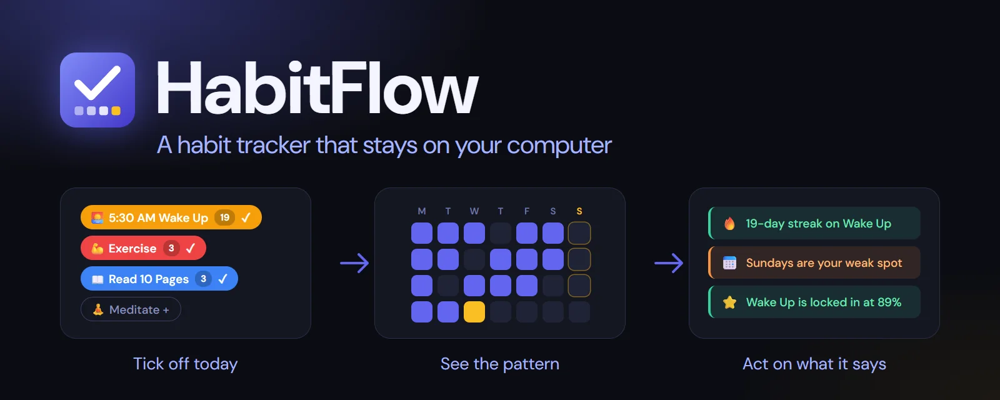
There are two main views: a Today page with a streak chip for every habit and a monthly check-off grid underneath, and a dashboard that leads with plain sentences about your own data before it shows any chart. You can also export any month to a formatted Excel workbook, and back everything up to a single JSON file.
On Windows it installs like any other app. Download the setup file or the portable zip from the GitHub Releases page, no Python needed. On macOS and Linux you run it from source.
Why I Built This
Most habit tracking apps are either locked behind subscriptions, require an account, or store your data on someone else's server. I wanted something simpler: a tool that just works, stays on your machine, and does not ask for anything in return.
It started as a side project to solve a practical problem I had with existing tools, to go deeper into Flask and SQLite, and to share a working, well-structured example with the open-source community.
The project also became a good exercise in shipping desktop software from a Python web app: packaging it with PyInstaller, wrapping it in a per-user installer, and building the release on GitHub Actions so anyone can reproduce the build.
The Problem
Most habit trackers require an account, an internet connection, or a paid plan to unlock basic features. Even the free ones store your data on external servers, which is not ideal if you care about privacy.
A second problem is that many of them score you unfairly. Add a new habit today and last month's completion rate drops, because the habit is counted against days before it existed. That quietly discourages the very thing the app is meant to encourage.
HabitFlow removes all of that. You install it, run it, and it works. Your data lives in a file on your own machine, there is no login, no sync, no cloud dependency, and a habit is only judged on the days you were actually tracking it.
It is also useful as a reference codebase for developers who want to see how to build a Flask app with a database, a multi-page UI, chart integration, file export and a Windows installer, all in a single, readable Python file.
Key Features
Today and the Grid
A chip per habit with its streak, a progress ring, and a monthly grid where you can fill in a forgotten day
Insights, Not Just Charts
Plain sentences about streaks, your weakest weekday and the habit dragging the month down, plus Chart.js trends
Excel Export
Three formatted sheets for any month: Overview, Habit Tracker, and Habit Analysis
Windows Installer
A per-user setup file and a portable zip, built in the open on GitHub Actions
- Honest percentages: a habit only counts between the day you created it and the day you removed it, so adding or removing one never rewrites history
- Add, edit, and remove habits with a custom emoji, colour and a "Tracking since" date
- Soft delete so the completion data of a removed habit is preserved
- Backup and restore from a single JSON file, to move between machines
- A local JSON API, so you can tick a habit from a script, a cron job or a git hook
- Light and dark theme with the preference saved in the browser
- Closes with the tab: the packaged app exits two minutes after the browser tab is closed
- Private by construction: it listens on 127.0.0.1 only, rejects other hostnames, and loads its fonts and charts from its own files
Screenshots
Today and the Monthly Grid (Dark Mode)
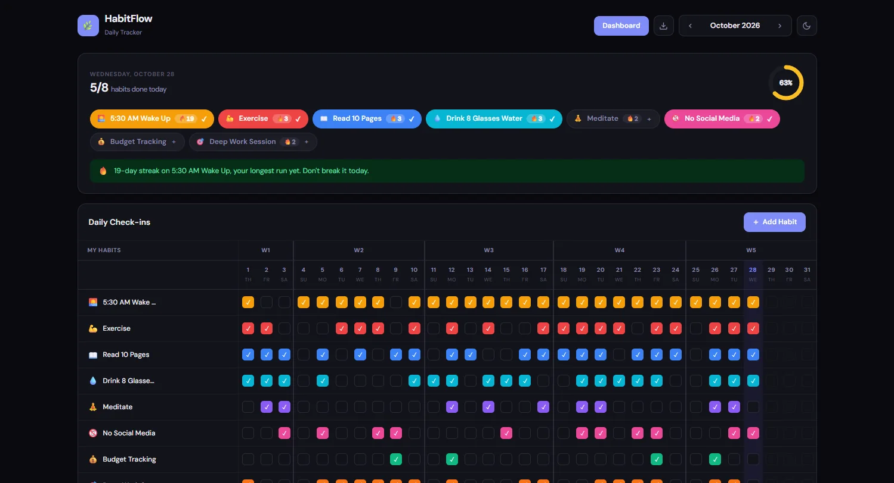
Today and the Monthly Grid (Light Mode)
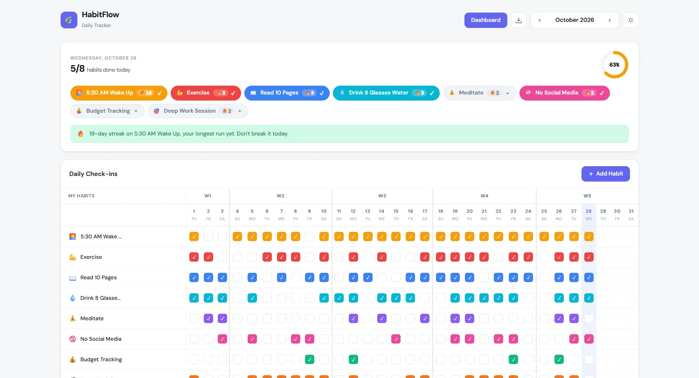
Insights on the Dashboard
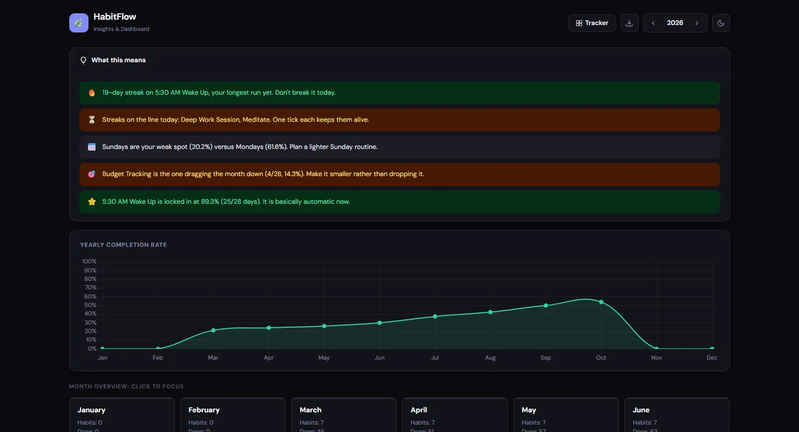
Streaks and Weekly Rhythm
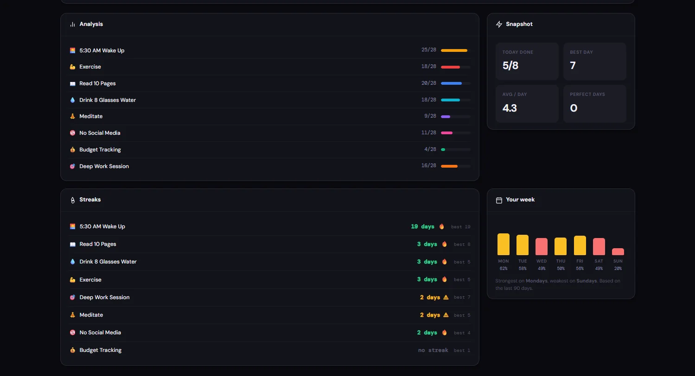
Backup, Restore and Export
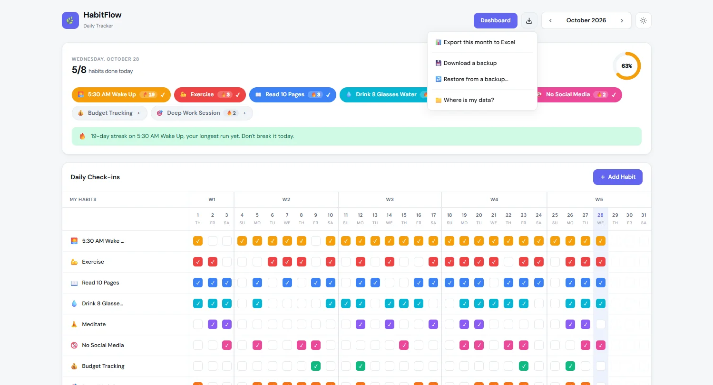
Adding a New Habit
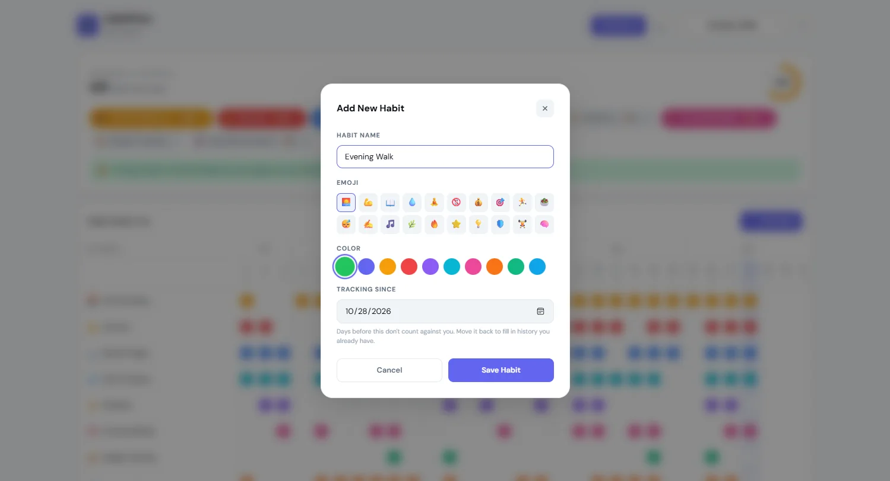
Excel Export
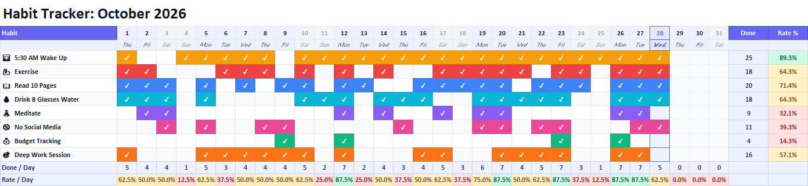
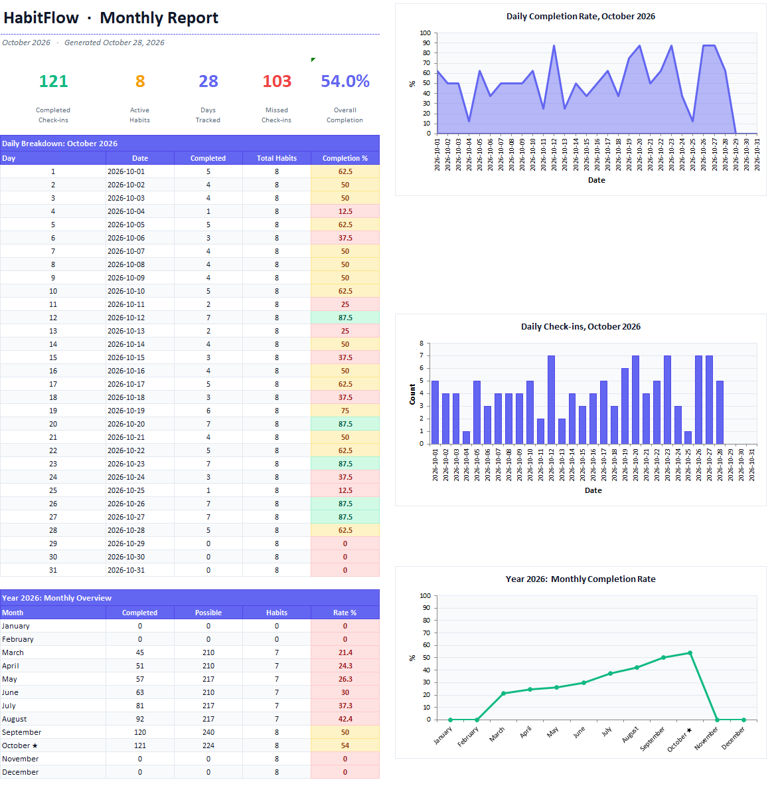
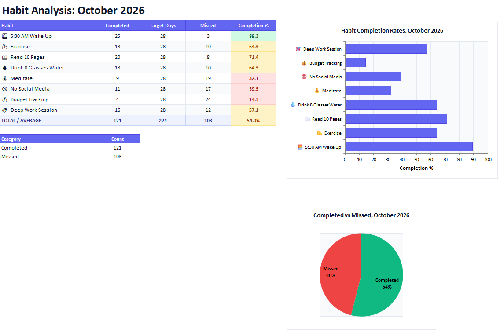
How the Pieces Fit
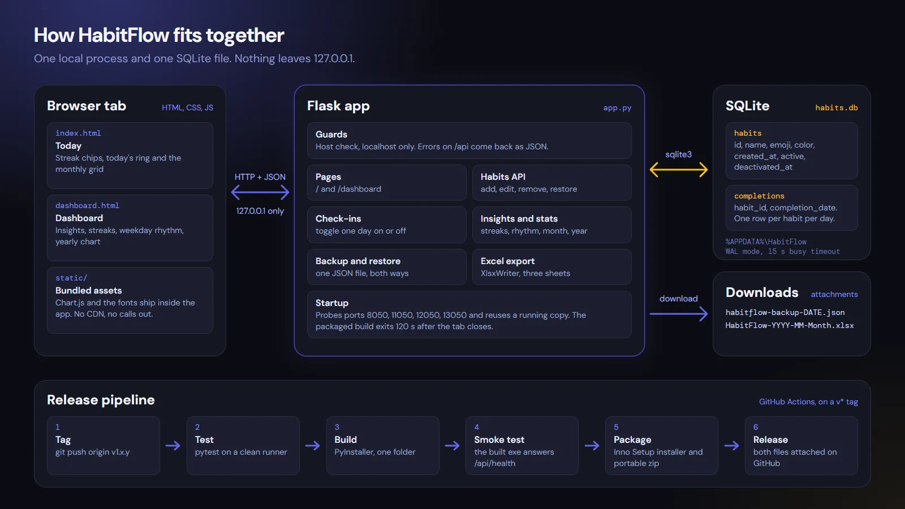
How It Works
- Start the app - Launch HabitFlow from the Start Menu or run
python app.py. It creates or migrates the database, tries ports 8050, 11050, 12050 and 13050 in turn, and opens your browser. If HabitFlow is already running on one of them, it opens that window instead of starting a second copy. - Track habits - The page calls
/api/habitsand/api/completions/<year>/<month>and renders the chips and the grid with plain JavaScript. - Check off a day - Clicking a cell posts to
/api/completions/toggle. The server refuses future days and days the habit was not being tracked, then inserts or deletes the row. - Read the dashboard - The dashboard calls
/api/insights/<year>/<month>for streaks, the weekday rhythm and the highlight sentences, and/api/stats/year/<year>for the yearly chart, which Chart.js draws from a bundled copy. - Export or back up -
/api/export/<year>/<month>builds a multi-sheet.xlsxin memory with XlsxWriter./api/backupand/api/restoremove everything in and out as one JSON file. - Data storage - Everything is in one SQLite file at
%APPDATA%\HabitFlow\habits.dbon Windows, or~/.local/share/HabitFlow/habits.dbon other systems. - Closing - Each page sends a heartbeat every 10 seconds. The packaged app exits when nothing has reached it for 120 seconds, so closing the tab closes the app.
Tech Stack
Backend
Frontend
Data & Export
Packaging, Tests & CI
My Contribution
I designed and built this project end to end.
- Defined the scope and user experience from scratch
- Designed the SQLite schema, including the tracking window that keeps percentages honest, and all the Flask API routes
- Built the Today page, the monthly grid and the dashboard with Jinja2 templates and vanilla JavaScript
- Wrote the streak, weekday rhythm and highlight logic behind the insights
- Integrated Chart.js for monthly and yearly visualizations
- Wrote the Excel export with three formatted worksheets using XlsxWriter
- Packaged the app with PyInstaller, wrote the Inno Setup installer, and set up the GitHub Actions workflow that tests, builds, smoke-tests and publishes both files on a version tag
- Wrote the test suite, the architecture and API docs, and the security policy
Challenges & Learnings
Percentages that do not punish you
The first version counted every habit against every day of the month. Adding a habit today dragged last month
down, and deleting one rewrote history. The fix was to give each habit a tracking window, from
created_at to deactivated_at, and make removal a soft delete. One small set of helpers
decides which days count, and the tracker, the dashboard and the Excel export all call it, so the three can
never disagree. The toggle endpoint uses the same rule to refuse a tick outside the window.
Bundling Flask templates inside a PyInstaller build
Flask needs to find its templates/ and static/ folders at runtime, but a frozen app
keeps them in a temporary extraction folder. A small _resource() helper checks
sys._MEIPASS when the app is frozen and falls back to the script directory otherwise. I also
moved to a one-folder build, which starts faster because nothing is unpacked on each launch, and turned UPX off,
because packed executables are a common antivirus false positive and an unsigned installer already starts with
a SmartScreen warning.
Choosing a port, and not starting twice
Since the app runs as a local server, a hardcoded port could conflict with other tools. It tries a short list of
ports and takes the first free one. The more useful part is the second launch: if a port is taken, the app asks
/api/health whether the thing answering is HabitFlow. If so, it opens that window and exits instead
of starting another copy with a competing database connection.
Making "nothing leaves your machine" true
Binding to 127.0.0.1 is not enough, because a hostile web page can point its own domain at
localhost (DNS rebinding). A before_request guard rejects any request whose Host header is not
localhost. While preparing the project for open source I also found that both pages loaded their fonts from
Google Fonts, so the claim was false. The fonts are now bundled, and a test fails if any page ever loads an
external resource.
Building the Excel export
XlsxWriter is powerful but verbose. Writing the export_excel function, which generates three
formatted worksheets with embedded charts, took significant iteration. The challenge was balancing
formatting detail with code clarity, and handling edge cases like months with no data.
Closing the app when the tab closes
A packaged app has no terminal to close it from. Each page sends a heartbeat every 10 seconds, and a daemon
thread exits the process when no request of any kind has arrived for two minutes. It only runs in the packaged
build, so running from source never kills your terminal session.
Core Logic: How the Code Works
The full server is a single Python file. Below are the key implementation patterns that make the app work.
Resource Path Resolution (PyInstaller-Safe)
def _resource(rel):
"""Resolve a bundled-file path for both dev and PyInstaller builds."""
base = getattr(sys, '_MEIPASS', os.path.dirname(os.path.abspath(__file__)))
return os.path.join(base, rel)
app = Flask(__name__,
template_folder=_resource('templates'),
static_folder=_resource('static'))Port Selection That Reuses a Running Copy
PORTS = [8050, 11050, 12050, 13050]
def _probe(port):
"""Is HabitFlow already serving on this port? -> 'ours' | 'busy' | 'free'."""
with socket.socket(socket.AF_INET, socket.SOCK_STREAM) as s:
s.settimeout(0.4)
if s.connect_ex(('127.0.0.1', port)) != 0:
return 'free'
try:
with urlopen(f'http://127.0.0.1:{port}/api/health', timeout=1.5) as resp:
if json.loads(resp.read().decode('utf-8')).get('app') == APP_NAME:
return 'ours'
except Exception:
pass
return 'busy'
def _choose_port():
for p in PORTS:
state = _probe(p)
if state == 'ours':
return p, True # open the window that is already running
if state == 'free':
return p, False
return PORTS[0], FalseThe Tracking Window and Streaks
def _counts_on(habit, day):
lo = habit.get('created_at') or day
if day < lo:
return False
if habit.get('deactivated_at') and day > habit['deactivated_at']:
return False
return True
def _streaks(habit, done_dates, today):
done_today = today.isoformat() in done_dates
# the day is not over yet, so an unticked today does not break the streak
anchor = today if done_today else today - timedelta(days=1)
current = 0
d = anchor
while d.isoformat() in done_dates:
current += 1
d -= timedelta(days=1)
# ... the best run is computed from the sorted dates
return {'current': current, 'best': max(best, current),
'at_risk': current > 0 and not done_today, 'done_today': done_today}Habit Completion Toggle API
@app.route('/api/completions/toggle', methods=['POST'])
def toggle_completion():
data = _payload()
# ... habit_id parsing and the 404 for an unknown habit are omitted
comp_date = str(data.get('date', ''))
if not _valid_date(comp_date):
return jsonify({'error': 'date must look like YYYY-MM-DD'}), 400
if comp_date > date.today().isoformat():
return jsonify({'error': "You can't check off a day that hasn't happened yet"}), 400
if not _counts_on(habit, comp_date):
return jsonify({'error': f"{habit['name']} wasn't being tracked on that day"}), 400
existing = conn.execute(
'SELECT id FROM completions WHERE habit_id=? AND completion_date=?',
(habit_id, comp_date)).fetchone()
if existing:
conn.execute('DELETE FROM completions WHERE habit_id=? AND completion_date=?',
(habit_id, comp_date))
completed = False
else:
conn.execute('INSERT INTO completions (habit_id, completion_date) VALUES (?,?)',
(habit_id, comp_date))
completed = True
conn.commit()
return jsonify({'completed': completed, 'habit_id': habit_id, 'date': comp_date})Idle Watchdog for the Packaged App
_last_seen = time.time()
_IDLE_TIMEOUT = 120 # seconds; the browser sends a heartbeat every 10s
@app.before_request
def _refresh_last_seen():
global _last_seen
_last_seen = time.time()
def _idle_watchdog():
while True:
time.sleep(10)
if time.time() - _last_seen > _IDLE_TIMEOUT:
os._exit(0)
# in main(), packaged build only
threading.Thread(target=_idle_watchdog, daemon=True).start()Installation & Setup
Option 1: Install on Windows
# 1. Go to the latest GitHub release
https://github.com/inboxpraveen/Daily-Tracker/releases/latest
# 2. Download HabitFlow-Setup-x.y.z.exe and double-click it (no admin rights needed)
# or download the portable .zip, unpack it anywhere and run HabitFlow.exe
# 3. Your browser opens automaticallyThe installer is not code-signed, so Windows may show "Windows protected your PC". Click More info, then Run anyway. The release is built on GitHub Actions from the tagged source, and you can build it yourself.
Option 2: Run from Source
# Clone the repository
git clone https://github.com/inboxpraveen/Daily-Tracker.git
cd Daily-Tracker
# Create a virtual environment
python -m venv .venv
source .venv/bin/activate # Windows: .venv\Scripts\activate
# Install dependencies
pip install -r requirements.txt
# Run the app
python app.pyOption 3: Script It
# tick a habit for a day (this toggles, so calling it twice unticks)
curl -X POST http://127.0.0.1:8050/api/completions/toggle \
-H "Content-Type: application/json" -d '{"habit_id": 1, "date": "2026-10-28"}'
# this month's numbers and the same insights the dashboard shows
curl http://127.0.0.1:8050/api/stats/2026/10
curl http://127.0.0.1:8050/api/insights/2026/10
# a full backup
curl -OJ http://127.0.0.1:8050/api/backupFuture Improvements
- Add a weekly summary view alongside the monthly grid
- Allow users to reorder habits via drag and drop
- Support recurring habit schedules beyond simple daily tracking
- Optional CSV export alongside the existing Excel export
- A code-signed Windows installer, and installers for macOS and Linux
Closing Note
HabitFlow is fully open source under the Apache 2.0 license. It was built as a personal side project to solve a real problem and to share a working, understandable example with other developers.
If it helps you track your habits, gives you a reference for building a Flask app, or serves as a starting point for your own tool, that is exactly what it was meant to do. If it saves you a subscription, you can also sponsor the work on GitHub.
Bug reports, suggestions, and pull requests are welcome.